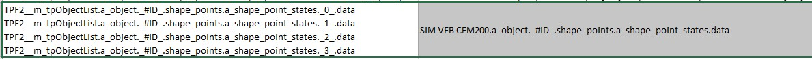
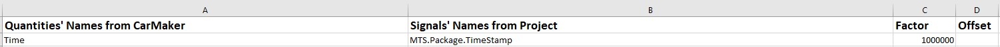

10. Tool for transferring the erg/mf4 file to bsig file¶
10.1. Introduction¶
This tool takes the erg or mf4 file from CarMaker as input. Basing on a mapping file in Excel format, it generates a bsig file with the pre-defined signals in the mapping file. It can be execute in python command as following:
python erg_mdf4_2bsig.py --ergmf4PathFile xxx --mapFile xxx --outputFile xxx -- --samplefrq xx
For example:
python erg_mdf4_2bsig.py --ergmf4PathFile d:\VSP_pyBase\pyfctEval\erg_mdf4_2bsig_test\LaneChange_MultiObj_5Lanes_143552.mf4 --mapFile d:\VSP_pyBase\pyfctEval\erg_mdf4_2bsig_test\Signals_Map.xlsx --outputFile d:\VSP_pyBase\pyfctEval\erg_mdf4_2bsig_test\laneChange_mf4.bsig --samplefrq 20
or
python erg_mdf4_2bsig.py --ergmf4PathFile d:\VSP_pyBase\pyfctEval\erg_mdf4_2bsig_test\ --mapFile d:\VSP_pyBase\pyfctEval\erg_mdf4_2bsig_test\Signals_Map.xlsx --outputFile d:\VSP_pyBase\pyfctEval\erg_mdf4_2bsig_test\laneChange_mf4.bsig --samplefrq 1000
10.2. Features of the Tool¶
10.2.1. Merge erg/mf4 file into one bsig file¶
Give the folder address which contains all the erg/mf4 files to be merged to the parameter —ergmf4PathFile. The tool will search all the erg/mf4 file in this folder and merge them into one bsig file as pre-defined in the parameter —outputFile.
Note
If erg/mf4 files have the same signals which need to be export to bsig, values of those signals only from last erg/mf4 file will be export to bsig file.
10.2.2. Automatic Replacement of #ID to Numbers¶
The tool can search for #ID in the signals names which defined in the Excel mapping file. It will automatically replace the #ID as 0, 1, 2, 3 … until this signal’s ID cannot be found in the erg/mf4 file any more. After that, the tool exports all the replaced signals into bsig file. Please define the signals with #ID like following picture in the Excel table.
{kind=link}
Note
The tool can support maximum 3 #ID replacement in one signal at moment.
10.2.3. More Signals in erg/mf4 File merging to one matrix Signal in bsig File¶
It is also possible to merge the values from different signals in the erg/mf4 file into one matrix signal in the bsig file. This feature can be defined in the Excel table as following picture. Then a matix signal will be export to the bsig file.
{kind=link}
10.2.4. Factor and Offset Calculation¶
Factor and offset can be defined in the Excel mapping file. Fill the factor in the column C and offset in the column D only to the related signals like the following picture. Those factor will be multiplied by the values from erg/mf4 and export the results to the bsig file. Those offset will be added to the values from the erg/mf4 file and export the result to the bsig file.
{kind=link}